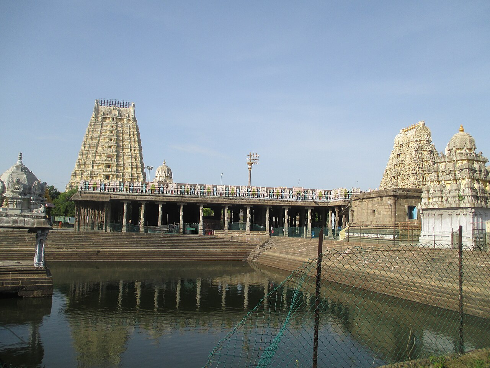
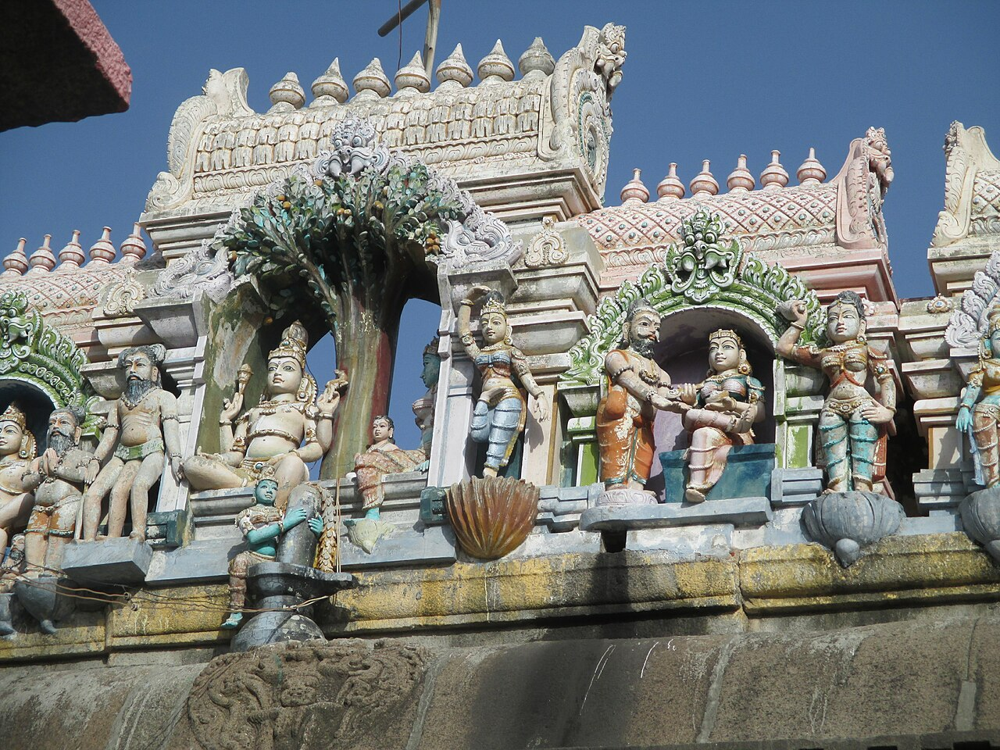
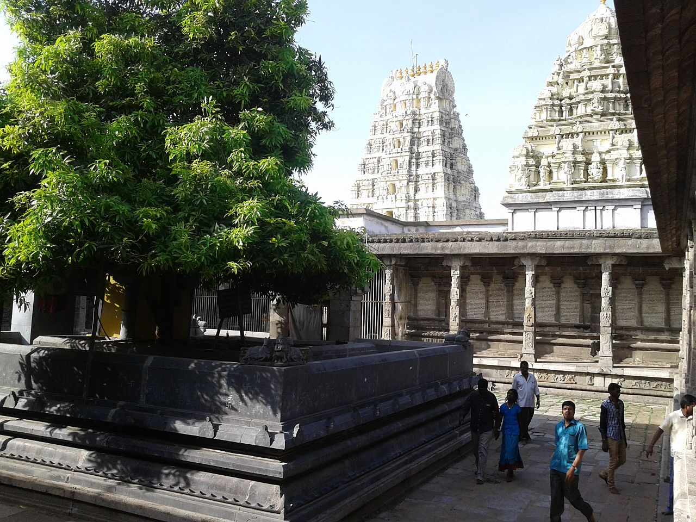
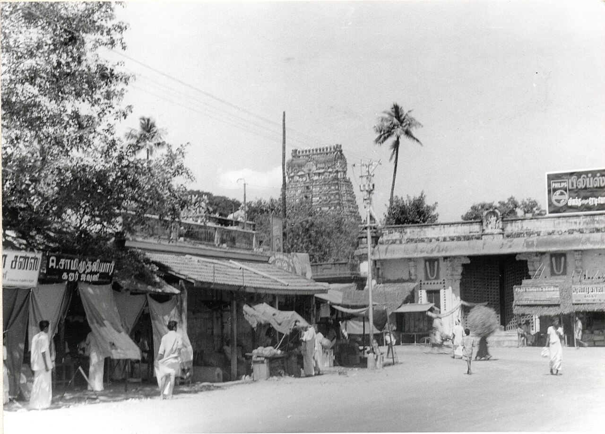

Ekambareswarar Temple , Kanchipuram
Kanchipuram – The City of a Thousand Temples and Ancient Tamil Spiritual Heritage
Overview
The Ekambareswarar Temple (also called Ekambaranathar Temple) in Kanchipuram, Tamil Nadu, India is one of the most ancient, largest, and architecturally remarkable Shaivite temples in the country, revered for its spiritual depth, mythic heritage, and scale. Spread over more than 25 acres, this sprawling Dravidian complex features towering gopurams (gateway towers), massive mandapams (halls), and richly sculpted corridors that testify to centuries of worship and artistic achievement. The temple is especially significant as one of the Pancha Bhoota Stalams — sacred shrines representing the element of earth (Prithvi) — where Lord Shiva is worshipped as Ekambareswarar or Ekambaranathar in the form of a Prithvi Lingam (earth lingam), symbolising stability, grounding, and the very foundation of existence itself. It is also a Paadal Petra Sthalam, glorified in the Tevaram hymns of the Nayanar saints from the earliest periods of Tamil Shaivism.
Sthala Purana (Legend and Spiritual Narrative)
According to the Sthala Purana of the temple, Goddess Parvati undertook severe penance under an ancient mango tree in this location as part of her yearning to unite with Lord Shiva. To test her devotion, Shiva sent elements such as fire and the river Ganga to challenge her penance, but Parvati’s devotion remained unwavering with the help of cooling moonlight and divine grace. In her longing, she fashioned a Shivalingam out of sand, which is believed to be the very Prithvi Lingam still worshipped as Ekambareswarar. The mango tree — considered over 3,500 years old and believed to once have borne four different types of mangoes from its branches representing the four Vedas — still stands within the temple precincts as a living symbol of Parvati’s devotion and Shiva’s blessing.
Moolavar and Temple Deities
The principal deity (moolavar) is Lord Shiva as Ekambareswarar (Ekambaranathar), revered in the temple’s sanctum where he is worshipped in the form of a Prithvi Lingam, signifying the element of earth and the universal grounding force. The sanctum also includes a gold‑plated lingam and a sculpted panel depicting Shiva and Parvati together — a rare artistic feature emphasizing the divine union at this sacred site. Although there is no separate shrine for Parvati within the main complex (as is common in many Shiva temples), local tradition holds that Goddess Kamakshi of Kamakshi Amman Temple in Kanchipuram is her consort here, creating a unique spiritual linkage between the two temples. Additionally, the complex includes a Vishnu shrine (Nilathingal Thundam Perumal) — recognised as one of the 108 Divya Desams — where Vishnu is worshipped as Vamana Murthy, affirming Ekambareswarar Temple’s multifaceted sacred significance.
Unique Heritage and Divine Legends of Srivilliputhur Andal Temple
The Srivilliputhur Andal Temple stands apart from other sacred Vishnu temples in India due to its deep connection with Andal and Periyalvar, making it a singularly important pilgrimage site. It is the birthplace of Andal, the only female among the twelve Alvar saints, and her father-figure, Periyalvar, a revered Vaishnavite poet-saint. Legend has it that Andal was discovered as a newborn under a sacred tulsi plant in the temple garden by Periyalvar, who adopted her and nurtured her devotion to Lord Vishnu from infancy. Her life became an enduring example of unwavering devotion (bhakti), expressed in her timeless Tamil compositions, the Thiruppavai and Nachiar Tirumoli, still recited by devotees every day. One of the temple’s most extraordinary traditions is that Andal herself would wear the garlands intended for the Lord before offering them, a unique act of devotion that no other temple preserves in daily worship. This custom was divinely approved through a dream received by Periyalvar, and today the garlands are still first adorned by Andal before being presented to Vatapatrasayi (Lord Vishnu). Additionally, the sanctum arrangement is exceptional: Garuda, Andal, and Lord Rangamannar (Vishnu as Andal’s divine consort) share the same sanctum, enabling devotees to witness the divine trio together — a phenomenon that is not found in most other Vishnu temples. These elements, combined with the temple’s rich cultural practices, make Srivilliputhur not just a place of worship, but a living embodiment of devotional literature, spiritual storytelling, and historical legacy.
Architectural Grandeur and Unique Rituals
Beyond its legends, the temple’s architectural grandeur further distinguishes it. Its towering Rajagopuram, rising to nearly 192 feet with eleven intricately sculpted tiers, is more than a gateway; it is an official emblem of Tamil Nadu, recognized for its artistic and cultural significance. Every tier depicts mythological scenes, deities, and intricate carvings reflecting centuries of Dravidian artistry, making it an unmatched masterpiece among temple towers. Inside Andal’s shrine, another unique ritual continues daily: a hand-crafted floral parrot is placed in Andal’s hand, a painstaking and devotional practice that symbolizes life, nature, and the playful aspect of divine grace. The walls of the shrine themselves narrate Andal’s life through detailed paintings and carvings, while the temple halls showcase large Vijayanagara-era sculptures and decorative pillars. Combined with the recitation of Andal’s Thiruppavai during the Margazhi month, festivals like Aadi Pooram, and daily rituals, these features make the temple a rare fusion of spiritual, literary, and artistic heritage, truly unparalleled in South Indian temple tradition.
Temple Timings and Rituals
The Ekambareswarar Temple welcomes devotees every day with morning darshan usually beginning around 6 :00 AM and continuing until about 12 :30 PM, and evening darshan from roughly 4 :00 PM until 8 :30 PM, although timings may vary slightly during major festivals or special occasions. These hours allow devotees to participate in daily rituals, explore the temple’s architectural marvels, and offer prayers at a peaceful pace. Much like other South Indian temples, worship follows traditional timings with six pujas at intervals throughout the day, encompassing sacred bathing (abhishekam), alankaram (decoration), naivedyam (offering), and deepa aradhanai (lamp offerings) performed with Vedic chanting and temple music.
Morning: 5:00 AM – 12:30 PM
Evening: 4:00 PM – 10:00 PM
Festivals
he temple’s festival calendar is rich with ritual and celebration, the most prominent being the Panguni Uthiram / Brahmotsavam — a grand 13‑day festival celebrated in the Tamil month of Panguni (March–April) that culminates in the divine marriage ceremony of Shiva and Parvati. During this period the temple’s corridors and chariots resound with ceremonial music, processions, and devotional fervour. Other important festivals include the Brahmotsavam golden car festival where the deity is taken around the temple premises in a richly decorated chariot, Maha Shivaratri, Navaratri, Kartikai Deepam, Thai Poosam, Chitra Pournami, and various monthly observances that bring devotees together for sacred chanting, ritual offerings, and communal worship.
History
The Ekambareswarar Temple has a history stretching back at least to the 6th century CE, with references in Tamil Sangam literature and Saiva devotional poetry, making it one of India’s most ancient continuously revered temples. Originally constructed by the Pallava dynasty, it was later rebuilt and expanded by the Chola kings in the 9th century, and significantly enhanced by Vijayanagara rulers, who added the iconic Aayiram Kaal Mandapam (hall of 1,000 pillars) and other architectural wonders. The eleven‑storied southern gopuram, constructed during the reign of Krishnadevaraya in the early 16th century, stands at about 58.5 m tall and is one of South India’s tallest temple towers. Various patrons — including local philanthropists and the Nattukottai Chettiars in the early 20th century — contributed to renovations and the preservation of this vast complex, which is today maintained and administered by the Hindu Religious and Charitable Endowments Department of the Government of Tamil Nadu
Temple Gallery




Darshan & Special Poojas
Daily worship at the temple includes six pujas performed at ordained times from early morning to late evening, each comprising abhishekam, alankaram, naivedyam, and deepa aradhanai — accompanied by temple music and Vedic recitations that elevate the spiritual atmosphere. During major festivals and auspicious lunar days (Pradosham, New Moon, Full Moon), special poojas, homams, and ceremonial rituals are offered, drawing large congregations of devotees seeking blessings for prosperity, spiritual grounding, and fulfilment of personal vows. The temple’s sacred routines reflect a blend of traditional Shaivite practice and local devotional customs passed down through generations.
Official Information & Contact
For official updates, darshan details, and announcements, devotees may visit the official website of the Ekambareeshwarar Temple Mylapore where updates on festivals, timings, and official announcements are posted.
🌐 Official Website:
https://ekambaranathartemple.tnhrce.in
📞 Temple Contact:
+91 44 2722 2084
+91 44 2723 2083
📧 Email:
kanchiekambaranathar@gmail.com
Temple Location
The Ekambareswarar Temple is located on Ekambaranathar Sannidhi Street, Periya, Kanchipuram, Tamil Nadu 631502, India — at the heart of one of India’s most historic temple cities, famed for its thousand‑year legacy of Shaiva and Vaishnava devotion. Kanchipuram is well connected by road and rail to Chennai and other major cities, with the Kanchipuram Railway Station just about 2 km from the temple and the nearest major airport being in Chennai (around 60–75 km away).
📍 Get Directions to Temple